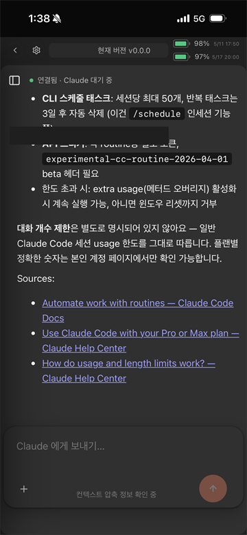
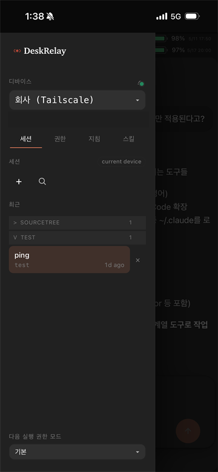
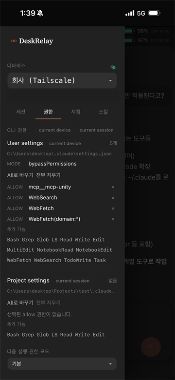
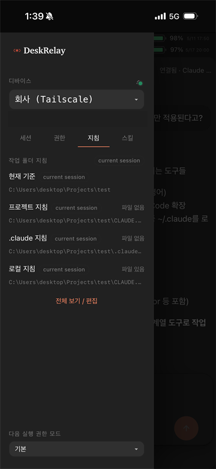
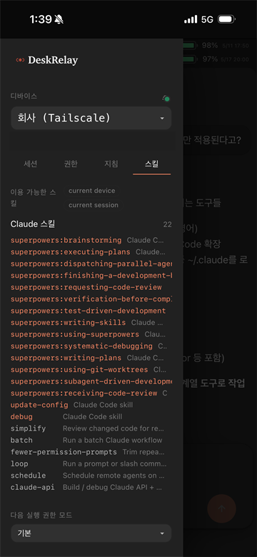

// 01 · mobile
출퇴근 중에도 같은 세션.
Android Capacitor 앱과 모바일 브라우저에서 동일한 세션을 그대로 이어 받습니다. 채팅·세션·권한·지침·스킬 탭이 모바일 사용 흐름에 맞게 정렬됩니다.
DeskRelay 는 내 PC 에서 실행되는 Claude Code 세션을 브라우저·모바일에서 안전하게 원격으로 조작하는 self-host 개발자 도구입니다. 서버 PC 한 대가 site-frontend, site-backend, local connector daemon 을 띄우고, 같은 LAN 또는 Tailscale 안의 다른 PC 를 디바이스로 등록해서 씁니다.


데모용 컨트롤러가 아니라, 본인 워크플로우에 끼워 쓰는 도구로 설계했습니다. 모바일·셀프 호스트·멀티 PC 세 축을 같은 무게로 다룹니다.
Android Capacitor 앱과 모바일 브라우저에서 동일한 세션을 그대로 이어 받습니다. 채팅·세션·권한·지침·스킬 탭이 모바일 사용 흐름에 맞게 정렬됩니다.

별도 서버 없이 본인 데스크톱이 site-frontend(:18193), site-backend(:18192), connector daemon 을 함께 띄웁니다. 외부 서비스에 토큰이나 키를 위탁할 필요가 없습니다.

Tailscale 또는 같은 LAN 안의 Windows PC 를 디바이스로 등록해서, 한 브라우저 UI 에서 전환합니다. 각 PC 는 자체 :18091 connector daemon 으로 동작합니다.
브라우저에서 시작해 사용자의 PC 안에서 끝나는 흐름. 바깥은 제품 shell, 안쪽은 사용자 PC 의 runtime authority. 민감한 실행 표면은 절대 외부로 새지 않습니다.
:18193Solid + Vite 로 빌드된 단일 페이지 앱. 사용자가 처음 보는 표면.
:18192브라우저와 사용자가 등록한 connector daemon URL 사이를 잇는 self-host backend. .self-server/state registry 보관.
:18191 / :18091private HTTP API 로 local Claude Code 동작을 노출. 서버 PC 와 등록 PC 각각에서 동작.
사용자 PC 에서 claude CLI 를 실행하고 stream-json output 을 kernel events 로 흘립니다.
.self-server/state 에 디바이스 등록 정보 보관.README 는 서버 설치, 접속 URL 과 token, 다른 PC 등록, 검증 리포트, 업데이트, 문제 해결을 한 흐름으로 설명합니다. 설치부터 일상 운영까지 30분 이내 완결을 목표로 했습니다.
Windows PowerShell 또는 macOS Terminal 에서 설치 스크립트를 실행합니다. 설치 후 기본 브라우저는 http://127.0.0.1:18193 로 자동으로 열립니다.
메인 화면의 등록 명령을 제어하려는 Windows PC PowerShell 에 붙여넣습니다. repo 설치/업데이트, connector 실행, Tailscale/LAN 주소 감지, 서버 접근 검증, 디바이스 등록을 한 번에 처리합니다.
좌측 드롭다운에서 PC 를 고르고, 새 채팅의 작업 디렉토리를 선택하며, 권한 탭과 스킬 탭에서 현재 Claude 환경을 확인합니다.
README 는 connector 포트를 공용 인터넷에 직접 노출하지 말고, 외부 접근이 필요하면 Tailscale 같은 사설 네트워크를 쓰라고 명시합니다. 다른 PC 등록 조건도 같은 LAN 또는 같은 Tailscale tailnet 입니다.
문제 해결도 이 경계 안에서 설명됩니다. 디바이스가 목록에 없으면 서버 URL, 같은 LAN/Tailscale, 대상 PC 의 18091 포트, 방화벽, registration report, connector 검증 리포트를 순서대로 확인합니다.






처음에는 작은 원격 컨트롤러였습니다. 그러나 매일 본인 워크플로우에 쓰다 보니, 안정성·복구·인증·로그처럼 도구를 도구답게 만드는 부분이 곧 본문이 되었습니다.
Android 앱은 Capacitor wrapper 로 빌드하면서 권한 모델·서명·릴리스 채널을 정리했고, 셀프 호스트는 비개발자도 30분 안에 띄울 수 있도록 가이드를 완성했습니다.
결과적으로 DeskRelay 는 시연용 데모가 아니라, 일상 워크플로우에 끼워 쓰는 개발자 도구가 되었습니다. 같은 도구를 만들어 보고 운영해 본 경험이, 다음 직장에서도 같은 자세로 일할 수 있다는 가장 직접적인 증거라고 생각합니다.
“데모가 아니라
매일 쓰는 도구.